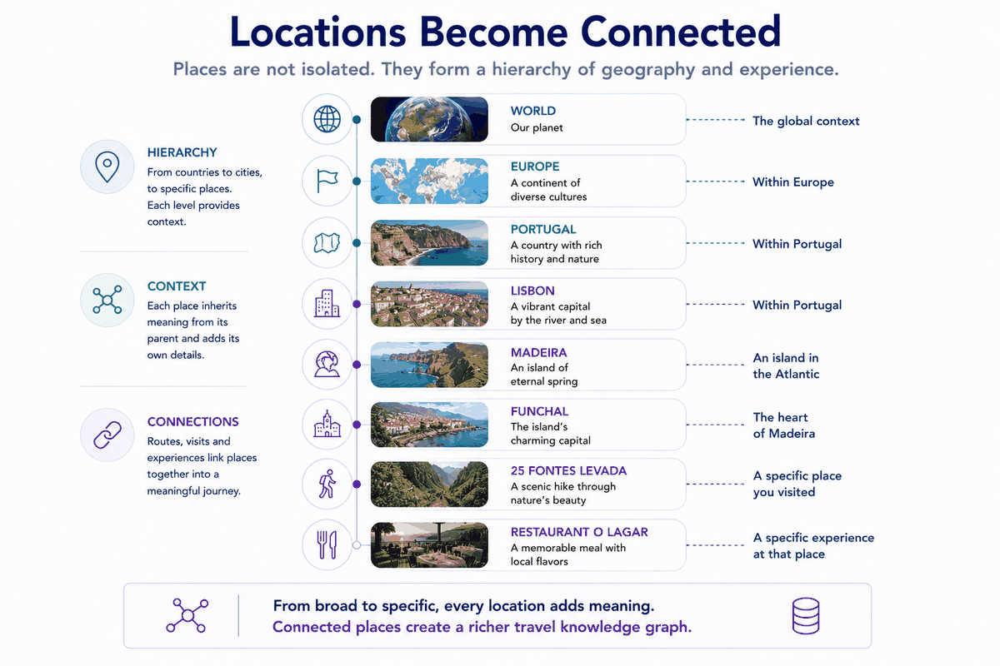
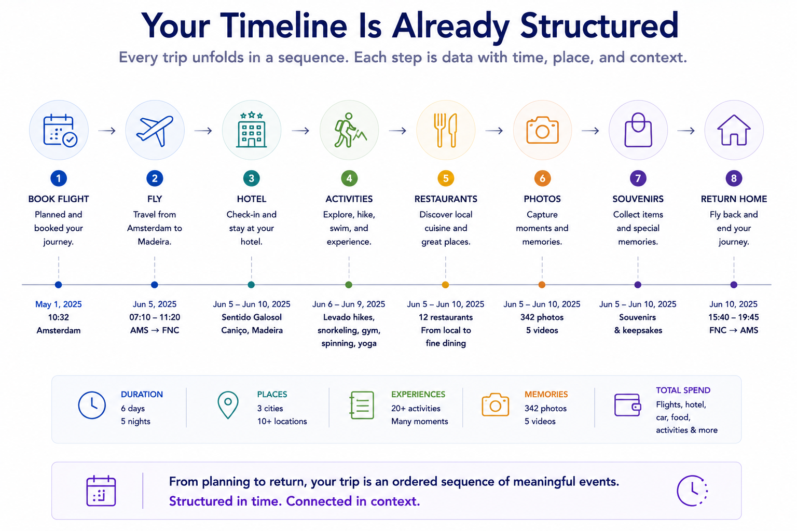

The thing I didn't have to write
My sister Annemarie runs a travel site she's genuinely proud of — keepwandering.com. It's not a blog. Under the hood it's a real content model: trips, experiences, places, a full geography hierarchy, all related so one café in Rome can surface on its city page, its country page, and inside three different trip itineraries at once. Fifty-one trips. Three hundred and eighty-one experiences. Structure, not a stream.
We've travelled a lot of those trips together — some with our mother, earlier ones with our father. So when she asked whether I could feed my side of our shared trips into her site, the obvious answer was: sit down and write them up.
I didn't write a single one. I didn't have to. The trips were already there — as structured data — scattered across a system I'd been keeping for years. The work wasn't authoring. It was extraction. And that distinction is the whole point.
Where the data already lived
For about a decade I've kept a daily note for every day. Not a diary — an index. Each day's note carries, in plain markdown, the things that happened: places visited with timestamps, lodging check-ins, transactions, a location trail. Some days are rich, some are three lines. But they're consistent enough to parse.
Separately, I have the photos. Tens of thousands, on disk, in a file-system-first library — private/<year>/<year-month>/ — each named with the moment it was taken: 20220405_130415.jpg. The filename is a timestamp.
Two piles of material I'd been accumulating without ever thinking of them as a database. That's the trap, and it's a common one: you treat your own records as archive — stuff you keep — when they're actually source — stuff you can query. The difference is whether anything reads them.
So I built the thing that reads them.
The shape: trip → day → activity → place
The model is boring on purpose. A trip has days. A day has activities. An activity may point at a place. Places are reusable — the same hotel can appear across three trips. Photos link to days and activities by time. That's it.
dim_trip ── dim_trip_day ── fact_activity ── dim_place
│ │
└─ photos linked by capture-time ┘Anyone who's done dimensional modelling will recognise this instantly: it's a fact table (fact_activity, grain = one activity on one day) hanging off conformed dimensions. I didn't reach for that because it's clever. I reached for it because it's the shape that lets you ask questions later — "every restaurant we visited in Sicily", "which days have no photos", "places visited more than once" — without rewriting anything.
The store is a single DuckDB file. No server, no schema migration ceremony. One file you can copy, query, and throw away.

The extractor, and the honest part
The extractor walks a trip's day-folders, reads each daily note, and pulls the structure out. The interesting wrinkle: my notes have changed format over the years. A 2022 note records a day as tables — Places Visited (address, start, end), Calendar events (the lodging check-outs live here). A 2026 note is richer and more narrative — a Planned activities table, an accommodation block, an auto-generated location trail from photo EXIF.
So the extractor handles both schemas. It tries the rich format first, falls back to the structured tables, and — this is the part I care about most — logs what it couldn't parse. When it hits a day it can't read, it says so:
days=18 activities=91 places≈69
⚠ unparsed (1):
- 2026-05-30: daily note present but no parseable activitiesThat line is not an apology. It's the feature. A system that silently skips what it can't handle will quietly lie to you about coverage. One that names the gap keeps you honest about what you actually have. I'd rather ship "55 activities and here's the one day I missed" than "55 activities" with no idea what fell on the floor.
Run it on our Sicily 2022 trip: 8 days, 55 activities, 19 places. Run it on France this June: 18 days, 91 activities, 69 places, travellers correctly read as Jaco and Annemarie, flagged as a shared trip. No prose written. All of it extracted.

Photos: the filename already knew
Linking photos to activities sounds like the hard part — computer vision, GPS clustering, the works. It mostly wasn't.
Android names every photo YYYYMMDD_HHMMSS. The daily note records activities with local times. So linking a photo to what we were doing is, at its core, matching two clocks: find the activity nearest in time to when the shutter fired.
[[figure: your-trips-are-already-structured-data-part-1-04.png | A single photo is far more than pixels. The timestamp, GPS coordinates, camera, lens, orientation and exposure all ride along inside the file — already structured, already queryable. Linking a photo to the right moment of the right day rarely needs computer vision; the metadata the camera wrote was the join key all along.]] The linker reads each photo's capture moment — from the filename first, then a sidecar, then EXIF, then file date, whichever exists — and attaches it to the right day and, when the times are close enough, the right activity. One representative photo per day gets flagged.
Sicily: 1,128 photos linked across 8 days. France: 2,196 across 18. And here's the lesson that cut a whole stage out of the plan — I'd assumed I needed to run the photos through my full asset-management pipeline first, to generate metadata sidecars, before anything could link them. I didn't. The filename carried the timestamp all along. The structure I needed was already in the data; I just had to read it instead of regenerating it.
Then the messy-but-necessary cleanup
Extraction gives you raw truth, and raw truth is messy. The 2022 notes recorded lodging as three separate lines — Check-in: Villa Mallandrino, Check-out: Villa Mallandrino, Stay at Villa Mallandrino — which, taken literally, becomes three different "places." The address rows came through as raw strings with no city attached.
A small normalization pass fixes this: strip the action prefix so a hotel collapses to one place, parse Italian addresses into label + city + country, and — importantly — refuse to turn a prose planning line ("Annemarie rests in the apartment; Jaco maybe a short walk") into a fake venue. The result: places dropped from 137 to 53, junk from 16 to 2.
That cleanup isn't glamorous and it's not optional. The gap between "I extracted some data" and "I extracted data someone else can import" is exactly this layer.
What goes to Annemarie
The output is a per-trip export, in two formats, because I'd rather give her a choice than make her adopt mine. One is clean JSON — portable, documented, the source of truth. The other is a WordPress import file, with the posts created as drafts so nothing goes live until she's reviewed it. Same database query drives both, so they can't drift apart.
There's a mapping doc that lines our model up against hers: our activity becomes her experience, our place becomes her place, our trip's country and city map to her geography. The field names are best-effort for now — we lock them exactly after her first import tells us what fits. The representative photo per day rides along as the featured image.
What she receives isn't a wall of text I wrote. It's our shared trips, structured, ready to review.
Why this is "structure beats magic," not "AI wrote my trips"
There's almost no model in this story so far. The extractor is parsing. The linker is clock-matching. The normalizer is rules. The export is a query. The intelligence isn't in a clever generation step — it's in the shape I imposed on data I already had.
That's the line I keep coming back to: the magic isn't in the model, it's in the structure you give it. A decade of daily notes is just journal entries until something reads them as a fact table. Tens of thousands of photos are just files until a filename becomes a join key. Get the structure right and the output stops being a heroic writing effort and becomes a query you can re-run forever.
The model does show up — but for the one job that genuinely needs judgement, not for the data plumbing. That's Part 2: turning this same structured backbone into a planner that proposes where to go next, using my preferences, my anti-preferences, and the places I've already worn out. The plumbing was the unglamorous 90%. It's also the part that made the rest possible.
Your trips are already structured data. The only question is whether anything you own has bothered to read them.